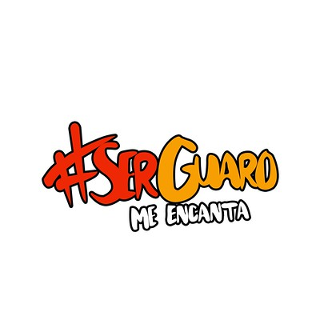

¿Qué es IMDERI?
Somos el Instituto Municipal del Deporte y Recreación de Iribarren (IMDERI), una entidad gubernamental localizada en el municipio de Iribarren, Estado Lara, Venezuela. Nos esforzamos por mejorar la calidad de vida de nuestros ciudadanos a través del deporte y la recreación.
El Instituto Municipal del Deporte y Recreación de Iribarren (IMDERI) fue fundado el 26 de noviembre de 2004, con la misión de convertirse en un organismo deportivo que promueva y proporcione actividades deportivas a la comunidad en general y a todo el municipio.

El IMDERI fue creado con el propósito de ofrecer a la comunidad espacios y oportunidades para la práctica deportiva y recreativa. A lo largo de los años, ha desarrollado una serie de programas y proyectos dirigidos a distintos grupos etarios, con el fin de integrar el deporte como un elemento esencial en la vida cotidiana de las personas.
En la actualidad, se están llevando a cabo diversos planes y programas destinados a la población. Estos programas buscan fomentar el bienestar y la inclusión social a través del deporte y la actividad física, promoviendo hábitos de vida saludables y fortaleciendo el tejido comunitario. Además, se centran en garantizar el acceso equitativo a actividades recreativas para todas las personas, independientemente de su edad, género o condición física.
